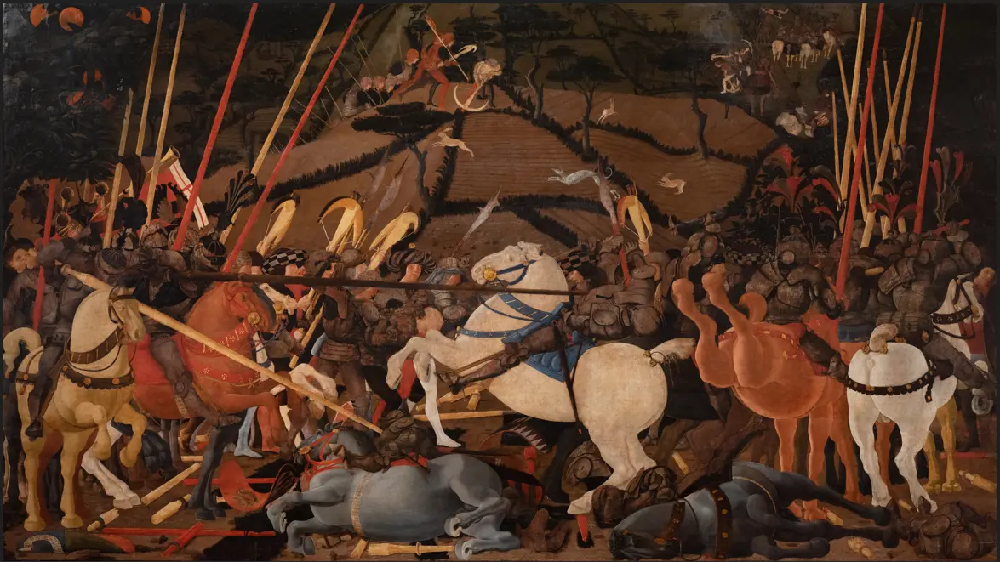
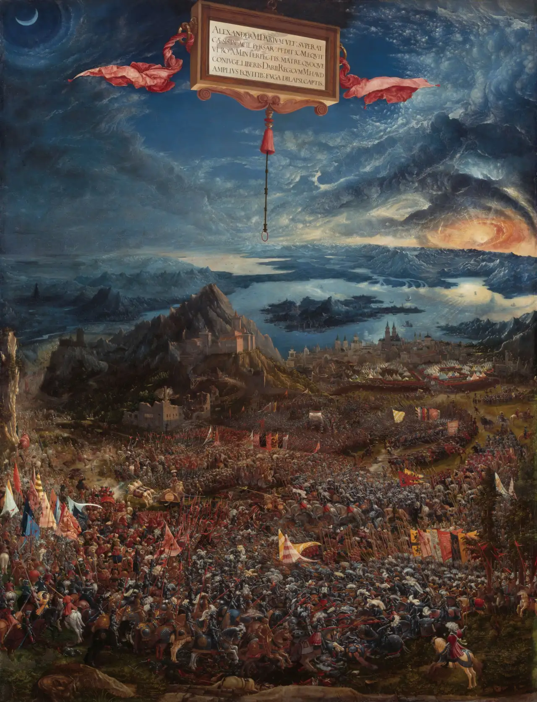
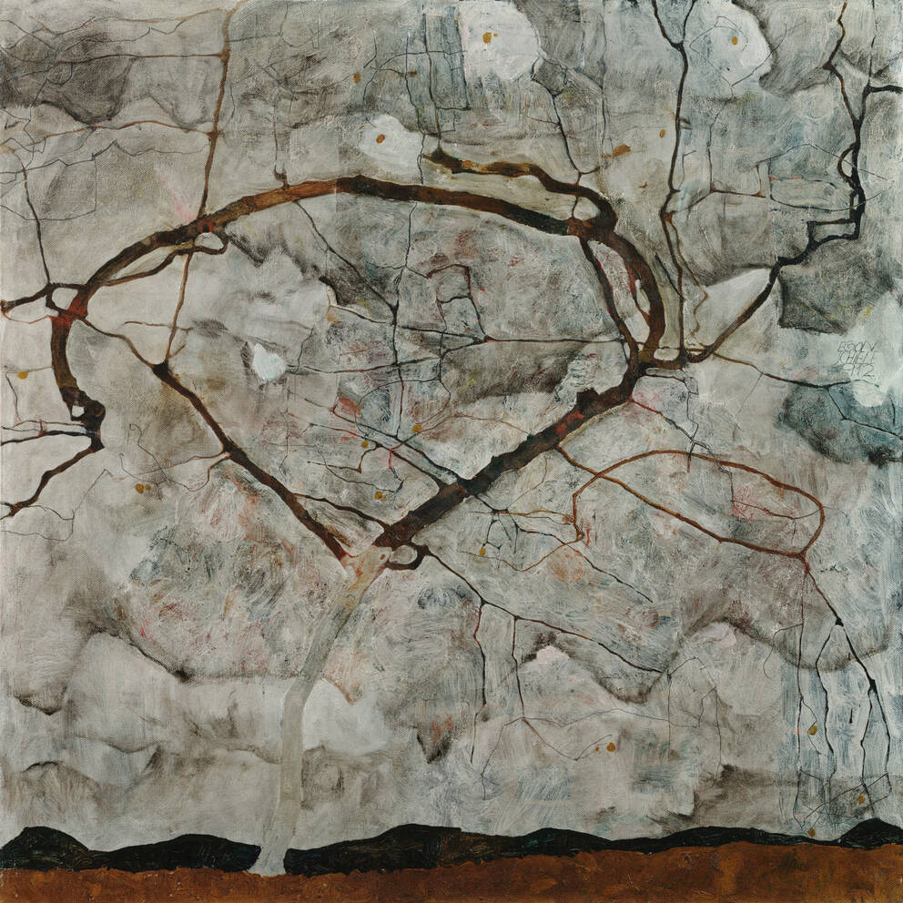

Caccia notturna
Paolo Uccello, 1470

Schlacht bei Issus
Albrecht Altdorfer, 1528

Herbstbaum in bewegter luft
Eagon Schiele, 1912
The invention of perspective was not transparency as a property of an object, it was the radical distinction of an object onto which sight could not accumulate. Emptiness becomes ever more present, no longer as a representation. Perspective distance is namely a substantiation of an unaddressed emptiness.
In Disarcionamento di Bernardino della Carda the main narrative event is also an application of the perspective model. Becoming perspective in action any heavy cavalry lance can realize a line that describes a unique vanishing point coinciding with the reloading crossbowman at the upper stripe of the painting. The central arc of dismounting a cavalryman constructively sets the scaffolding of perspective distance.
Simultaneously, the moving lance introduces the controversy of diagonal lines, which in the lower strip are substituted by projected lines on a perpendicular grid once the perspective model incorporates them as vanishing straight lines. The argument on ambiguity is a set of diagonals on the fields meeting at a central point, they render the constitutive elements of perspective into the model of superimposition under another problematic narrative arc, that of the hunt: a chasing dog and fleeing hares running between plowed grids loosely patched together.
Insofar as an unresolved narrative describes time, perspective is characterized as an ongoing action where the fallen horses and soldiers in the lower strip of the painting augment the detail on sections of the otherwise coarser shattered lances grid, contrasting with the figures on the waving cloud of fields. At the head level of the cavalrymen clashing in the foreground and the crossbows held above them perspective is ambiguously replaced with superimposition. However the explanatory distance between the legs of the horses is equivalent to a substantiation of the unaddressed emptiness, which occurs always in contact with a representation, tightly framing an object, accumulating sight.
Instead of a narrative argument Caccia notturna incorporates the cube as a subjunctive instrument of the image to traverse the unaddressed emptiness, which is simultaneously being described as an attribute of the cube and becoming descriptive. The layout of parametric trees with invariant height sets up a coordinate system where the morphing cube is a defining action of a coordinated unaddressed emptiness, unobtrusively lifting the ground of the Disarcionamento di Bernardino della Carda.
The collapse of the unaddressed emptiness is equivalently a characterization of the horizon line, from which the sky is realized as an unattainable object, one unable to be described given the framework of relative distances, subsequently underlying a fundamental characteristic of the perspective image: the reciprocity of the unaddressed emptiness and representations, since every representation has to be in contact with the unaddressed emptiness in order to be realized.
For Schlacht bei Issus the middle stripe is a map including the Mediterranean island of Cyprus and the Nile delta, a map whose elements are not in contact with the unaddressed emptiness. The horizon line is a representation rather than the collapse of the unaddressed emptiness. Such a shift constitutes a rupture describing the tension of perspective and superimposition images.
In Herbstbaum in bewegter Luft the relation between the ground, mountains and tree trunk characterize a superimposition image. However, the sky occurs simultaneously as background and as foreground, being pushed forward as far as the mesh of branches, to the extend of evaluating the transversal interplay of being against mediating figuration. The push forward happens as a carving out of detail in the figure, acting on a displacement in the concept of detail: from a representational value in figuration to a dense pictorial matter constitutive of the sky.